01
Kung fu
Koreni naše priče i veština celog tela.
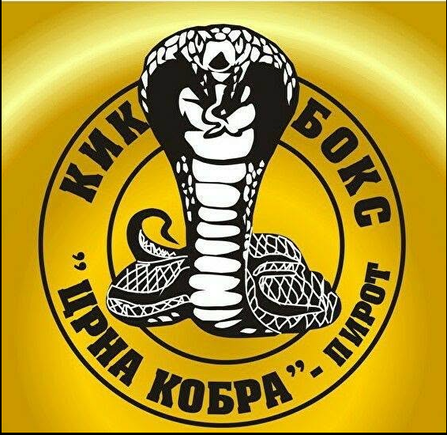
Institut za borilačkeViše od dve decenije gradimo snagu, disciplinu i samopouzdanje — kroz znanje koje traje.
Crna Kobra osnovana je 1. marta 2000. godine kao kung fu klub. Danas je institut za borilačke veštine i sportove, otvoren za sve koji žele ozbiljan rad, zdravo telo i miran um.
Klub su osnovala braća Bojan i Goran Krstić iz Pirota. Naša vrata su otvorena za decu, rekreativce i takmičare.
Koreni naše priče i veština celog tela.
Brzina, eksplozivnost i kontrola.
Duh, izdržljivost i čvrst karakter.
Svestran borilački pristup.
Praktična veština samoodbrane.
Trening u potpunosti prilagođen tebi.
Snaga, kondicija i zdrav ritam života.
Samopouzdanje kroz pokret i igru.
Majstor borilačkih veština posvećen radu sa svakim vežbačem, od prvog koraka do vrhunskih rezultata. Njegov trening spaja iskustvo, disciplinu i pažljiv, ljudski pristup.
Atmosfera iz kluba, trenuci discipline i ponosa. Klikni na fotografiju da je pogledaš u punoj veličini.
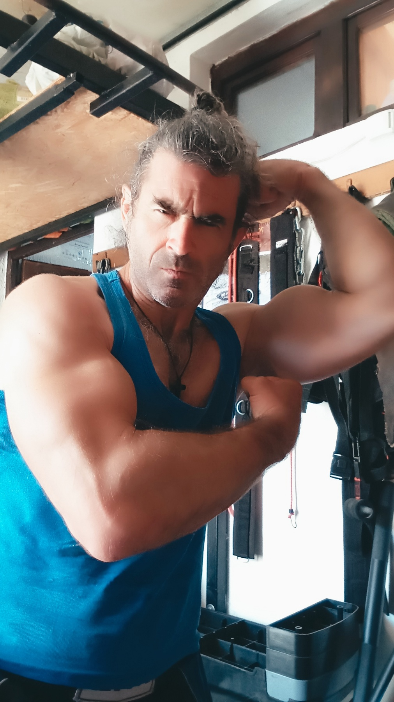
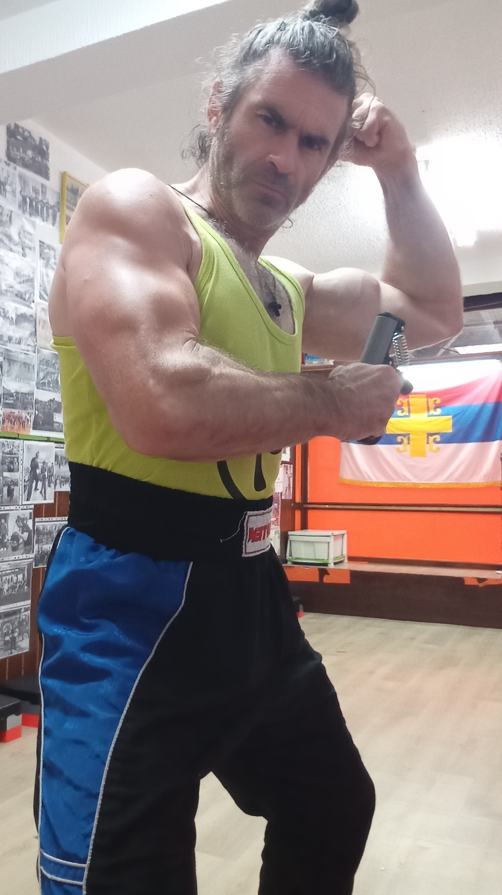
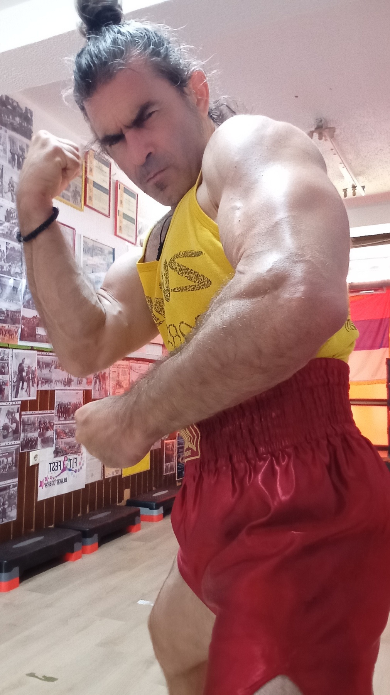
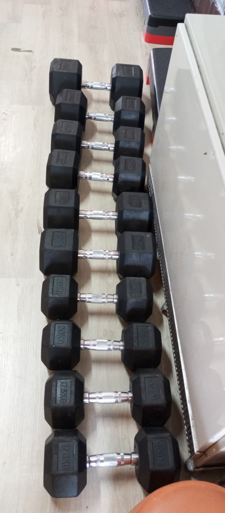
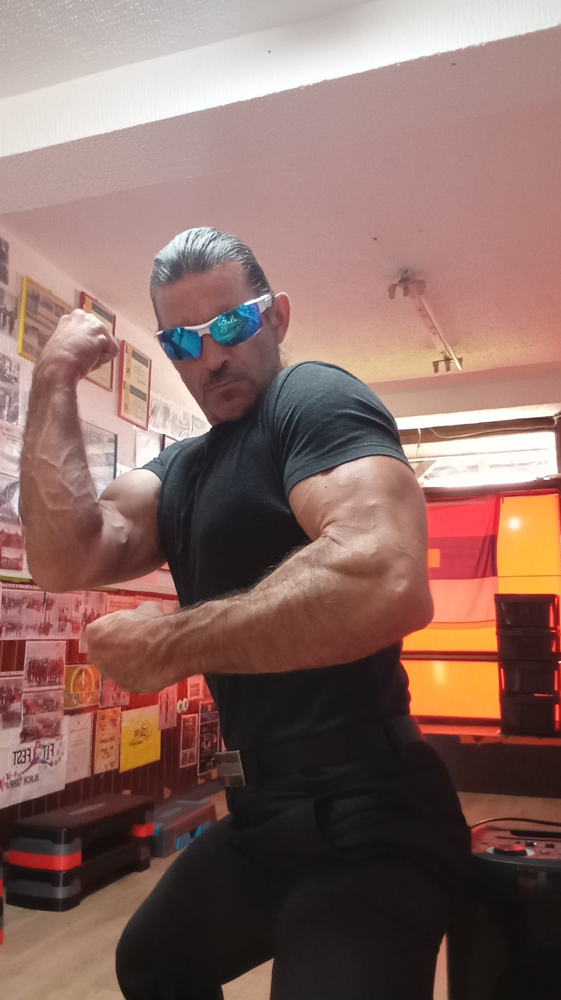
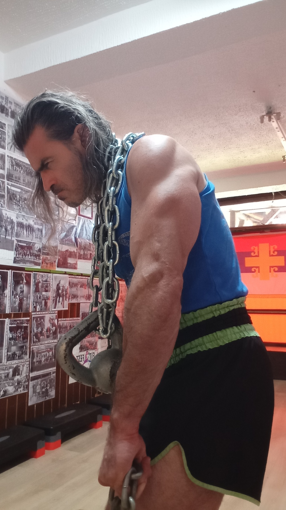
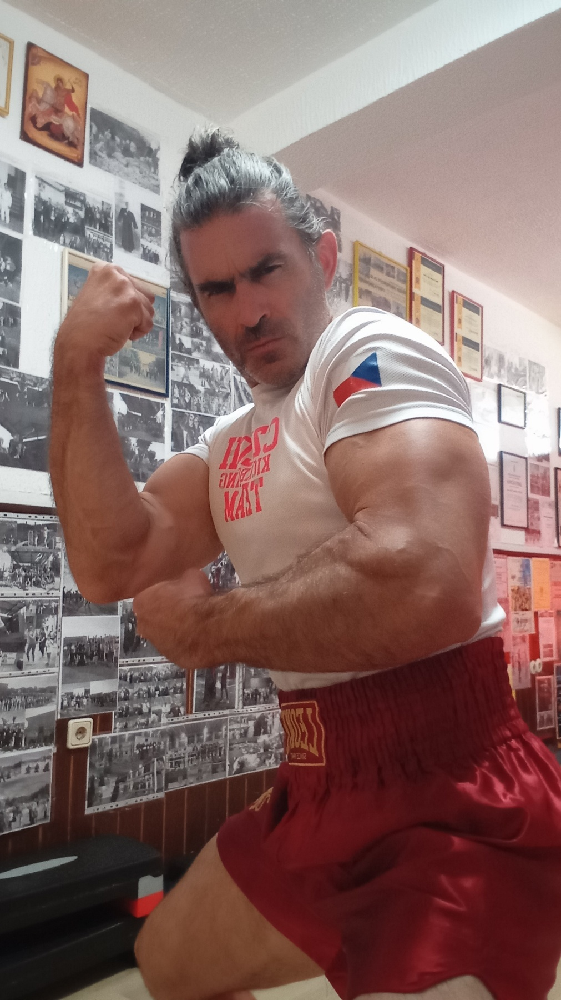
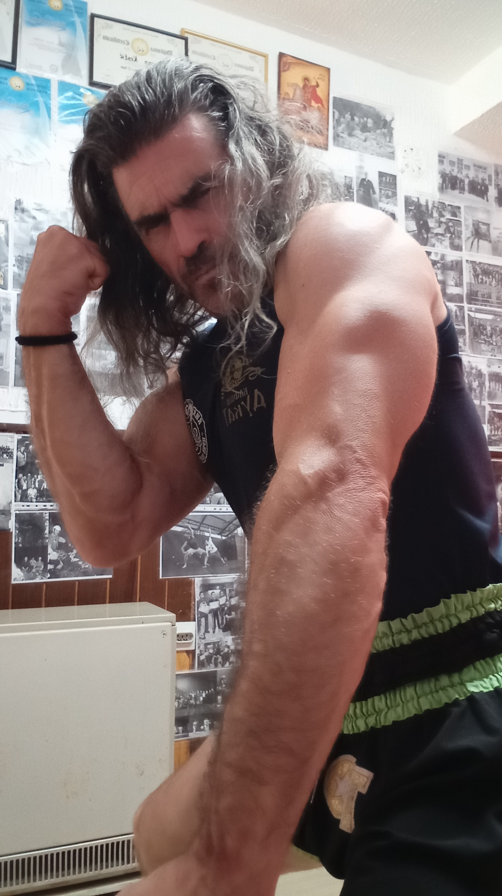
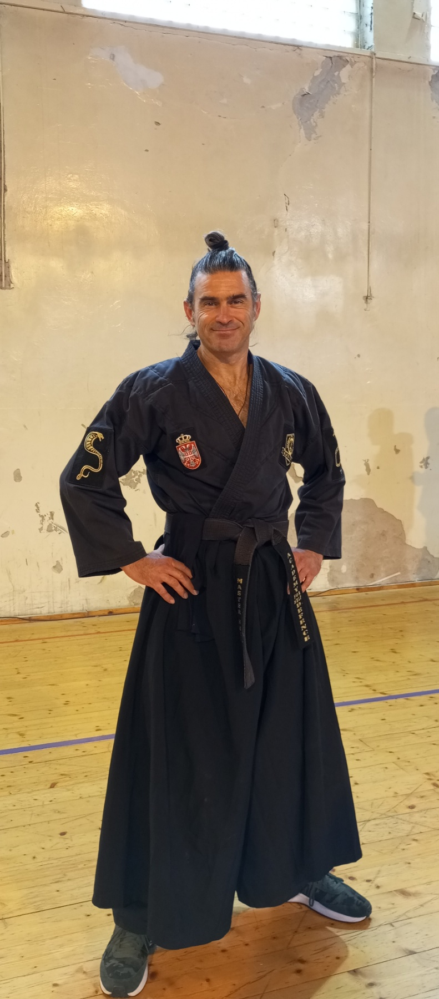
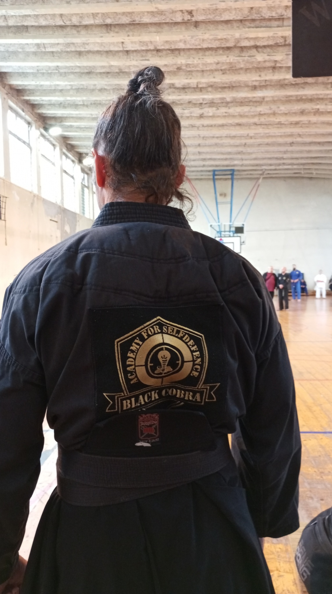
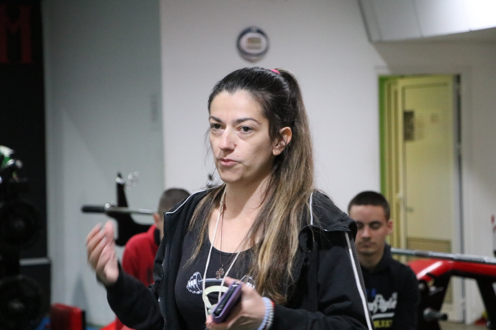
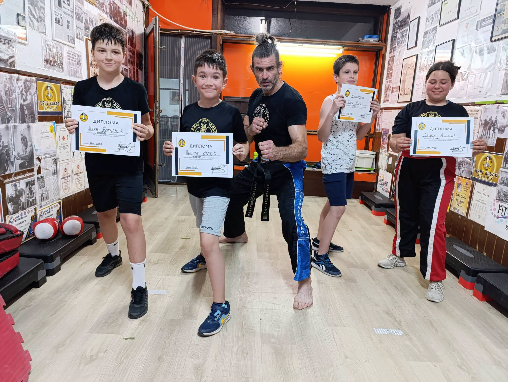

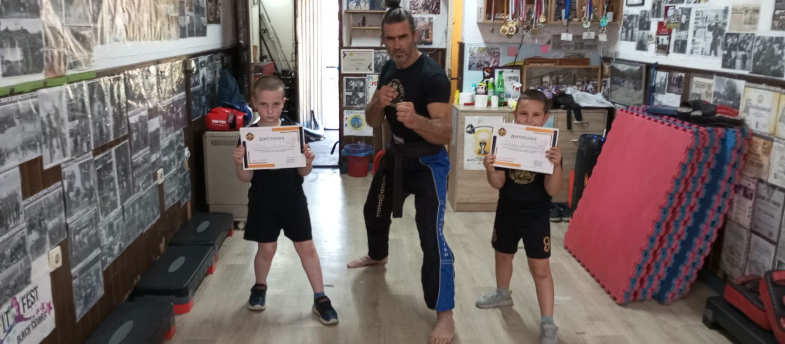
Uskoro stiže knjiga Gorana Krstića. QR kodovi u knjizi vodiće direktno na ovu stranicu — do dodatnih priča, fotografija i materijala koji žive i van korica.
Prati izlazak knjige →Pristupi planovima treninga, video lekcijama i sadržaju koji te vodi kroz rad — kod kuće, u teretani ili na putu.
Klikni bilo gde van fotografije da zatvoriš